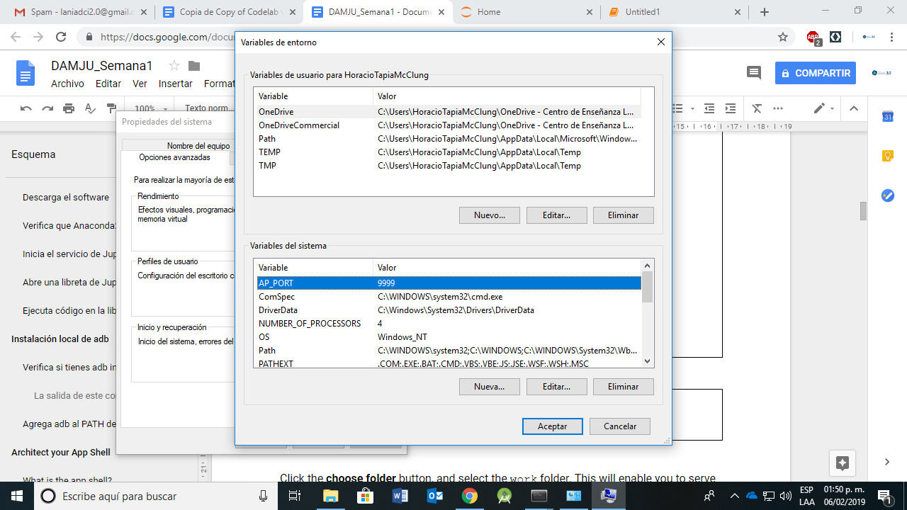
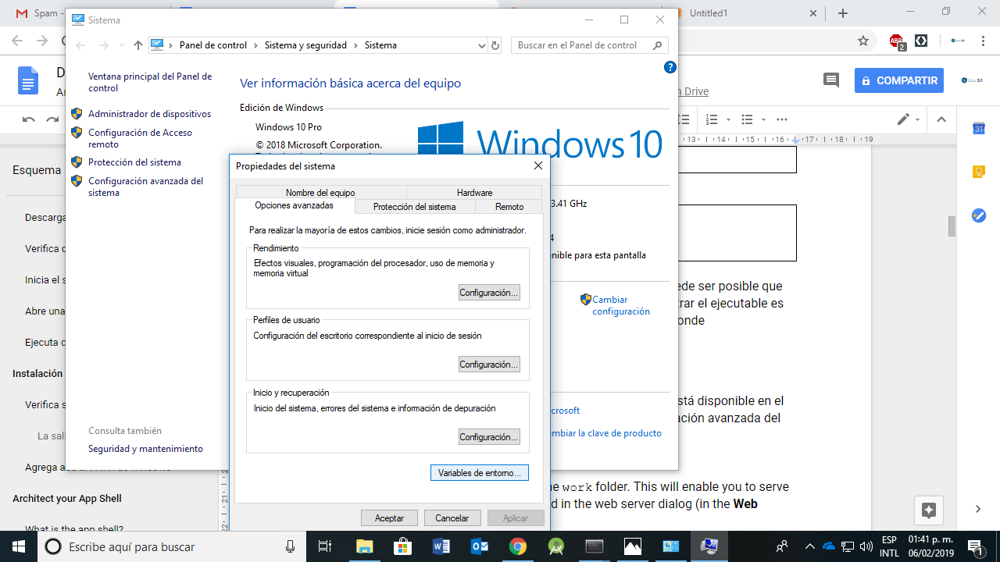
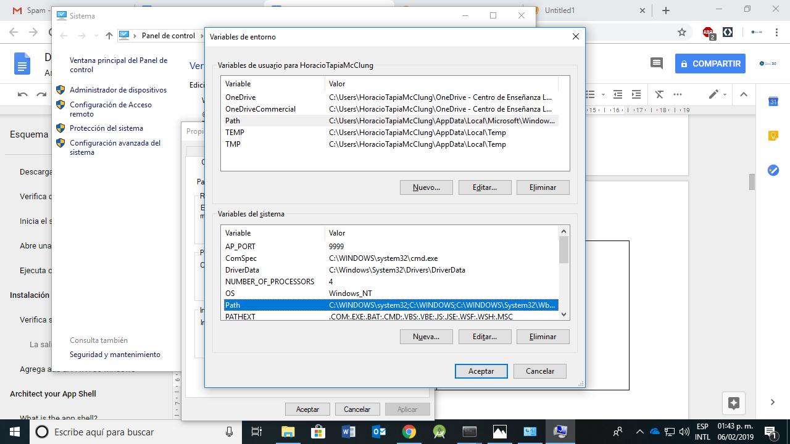
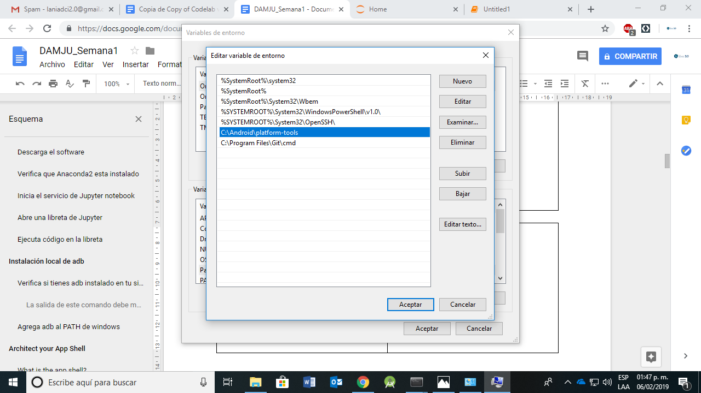

adb es el programa proporcionado por los desarrolladores de Android para detectar dispositivo móvil en el sistema local. Puede obtenerse en este enlace. La documentación de adb puede consultarse aqui.
En este laboratorio vamo a asegurarnos que el ejecutable de adb esta disponible en el sistema, y también vamos a crear variables de entornos apropiadas para tener la configuración lista y poder establecer conexiones entre el sistema local y el dispositivo móvil. |  |
adb instalado android-platform-toolsPara verificar si tienes instalado el programa, abre otra ventana de Anaconda Prompt o terminal y en la línea de comando escribe lo siguiente:
adb --versionDebes ver como salida de este comando algo parecido a lo siguiente, que indica la versión del ejecutable y la ruta de instalación.
Android Debug Bridge version 1.0.40
Version 4986621
Installed as C:\Android\platform-tools\adb.exeSi el comando anterior no regresa la información del programa, puede ser posible que no lo tengas en la ruta de acceso del sistema. La clave para encontrar el ejecutable es localizar los directorios Android y platform-tools pues es ahí donde tradicionalmente se localiza el ejecutable.
Una vez que hayas localizado el ejecutable, asegurate que la ruta está disponible en las variables de entorno del sistema operativo. Si estas en Windows, abre la configuración avanzada del sistema -> propiedades del sistema y en la pestaña de opciones avanzadas selecciones variables de entorno |  |
|   |
|
Vuelve a escribir en la consola el comando adb --version, esta vez debería funcionar si no lo ha hecho ya.
En este punto, debes tener configurado tu sistema local con el ecosistema de Jupyter y Python disponibles y el programa adb accesible por el sistema operativo.
Felicidades! Has terminado otro laboratorio para la configuración de nuestra herramienta de trabajo. En el siguiente laboratorio vamos a instalar y configurar
Python en el dispositivo móvil.